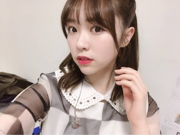
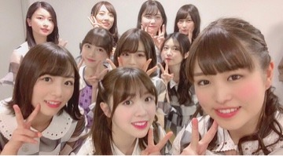
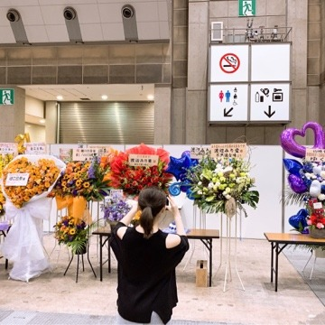
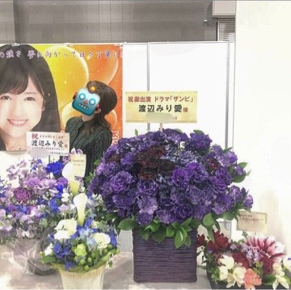
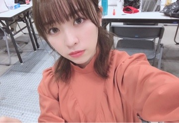

2019/0303Sun一意攻苦
バースデーライブ、
そして七瀬さんの卒業ライブ
無事4日間終了致しました！
沢山走って沢山考えて沢山踊って沢山歌って。
必死に、でも楽しく駆け抜けた4日間でした！

応援しに駆けつけて下さった皆様、
ライブビューイングや生配信で
見て下さっていた皆様、
お家や遠い所から応援して下さっていた皆様、
本当にありがとうございました(^ ^)
そして私達以上に身体を動かし、
寝る間も惜しんでライブを素敵なものに
作り上げて下さった全スタッフの皆様に
感謝しかありません。
ありがとうございました。

独特な雰囲気を持ってると言われる2期
私はその雰囲気が大好きなんだよなあ。
2期が他のユニットとか、選抜曲に出て踊ってる姿が
好きなんです。
そして私が参加させていただいた曲全ては
私にとって大切な曲ですし、
これからも大事にしていきたい！
風船は生きているで登場した時の
あの白いサイリウムの光景は忘れません。
ありがとうございました！
そして君は扇いでくれた
知ってる方の方が少ない気がするけど
アンダーアルバムに収録されている
私にとって大切な2曲目。
素敵な歌詞と曲調、
この歌に参加していないメンバーみんなも
この歌凄く好きなんだと言ってくれていて
素直に嬉しい。
イントロの始まり方が凄く好きなんです
幸せな空間でした！
そして生まれたままで
正直緊張気味でした。
センターを任された時、
嬉しくもあり、不安でもありました。
ファンの方から大事にされている曲だから
私で務まるか不安だったけれど、、
任せて頂いた事、嬉しく思います。
大好きな曲を披露できて良かった！
1期生から始まり、2期生3期生が加入、
そして4期生が加入し、
それぞれの期で色々な思い出、
辛かった事や楽しかった事が
あると思うけれど、
それでも全員で合わせて乃木坂46だから
このライブを通して思ったのは
メンバー全員でこれからも
乃木坂46を大きなものに
していきたいなと思いました。
卒業していくメンバーを見送るのは
寂しいけれど、、
卒業していったメンバー全員の
思いも背負ってみんなで坂を駆け上がりたい
いろいろなことが当たり前ではないから
日々の出来事に感謝をしながら
これからも活動していきたいです。
-------------
七瀬さんの卒業ライブ、
七瀬さんとっても綺麗でした。
七瀬さんのあの優しい笑顔を見る度、
これからもずっとその笑顔で
誰かを笑顔にしていくんだろうな。
私もそうなりたいなあって思いました。
本当にお疲れ様でした！
そしてみさ先輩も卒業を発表されましたね
みさ先輩には色々な事を教わったし、
緊張する現場に一緒にいてくれたし、
感謝する事ばかりです
お返しが出来ていないのが心残り、、
最後まで沢山笑って過ごせたらいいなあ。
あ！前々回の個別握手会の
渡辺を探せの正解は、


私が撮っていました〜。笑
いない、じゃなくて撮る側に回った。
なので、いないという答えは不正解です〜。笑
こちらが前回の。

素敵なお花、毎回本当に嬉しいです
ありがとうございます！！

みり愛
2019/03/03 20:12
コメント(501)
生まれたままで
最高でした！
 ∞
∞
最高でした！
みり愛ちゃんブログ更新ありがとう！
バースデーライブ本当にお疲れ様でした！
2日目は会場で4日目はライブビューイングで見に行ったよー！
2日目のボーダーで感動しすぎてずっと泣いてたし、2度目のキスからでトロッコ近くきたからめっちゃ爆上げしてた。笑
4日目は生まれたままででこれまた泣いた…センターで歌って踊る姿は本当に輝いてたし、感動しました。改めてみり愛推しててよかったーって思った。これからも応援するね！
1日目のシンクロニシティフロントって聞いたし、3日目の風船とか君が扇いでくれたとか見れなかったの本当に残念。。だけど円盤化したら速攻で買って見るね。笑
前々回の渡辺を探せマジで50回は画像見返したし、そういうことやったんか（笑）こりゃ一本取られましたわ。笑
カラコン？も雰囲気変わって良いね、可愛すぎる。笑
名古屋の個握行くね！楽しみすぎて寝れる気がしないよ〜おやすみ〜
バースデーライブ本当にお疲れ様でした！
2日目は会場で4日目はライブビューイングで見に行ったよー！
2日目のボーダーで感動しすぎてずっと泣いてたし、2度目のキスからでトロッコ近くきたからめっちゃ爆上げしてた。笑
4日目は生まれたままででこれまた泣いた…センターで歌って踊る姿は本当に輝いてたし、感動しました。改めてみり愛推しててよかったーって思った。これからも応援するね！
1日目のシンクロニシティフロントって聞いたし、3日目の風船とか君が扇いでくれたとか見れなかったの本当に残念。。だけど円盤化したら速攻で買って見るね。笑
前々回の渡辺を探せマジで50回は画像見返したし、そういうことやったんか（笑）こりゃ一本取られましたわ。笑
カラコン？も雰囲気変わって良いね、可愛すぎる。笑
名古屋の個握行くね！楽しみすぎて寝れる気がしないよ〜おやすみ〜
ブログ更新ありがとう！
バスラお疲れ様！！
俺は3日間現地で見れたよ〜
177曲全部よかったな！！！
風船、君が扇いでくれた、生まれたままでめちゃくちゃ良かったよ！
初日のシンクロのときに周りから「みり愛すげぇ」って声が聞こえて嬉しかったな〜
なんかいつもまとまりのない文章で申し訳ない汗
また全握等で感想言うね笑
バスラお疲れ様！！
俺は3日間現地で見れたよ〜
177曲全部よかったな！！！
風船、君が扇いでくれた、生まれたままでめちゃくちゃ良かったよ！
初日のシンクロのときに周りから「みり愛すげぇ」って声が聞こえて嬉しかったな〜
なんかいつもまとまりのない文章で申し訳ない汗
また全握等で感想言うね笑
最高にイカしてたよ！
みり愛ちゃんのダンス大好き！
2期生がキャッチフレーズ呼ばれるとこすごい面白かった(笑)
バスラ4日間おつかれさま！
これからも頑張ってね！
幕張全握行くので待っててください！
みり愛ちゃんのダンス大好き！
2期生がキャッチフレーズ呼ばれるとこすごい面白かった(笑)
バスラ4日間おつかれさま！
これからも頑張ってね！
幕張全握行くので待っててください！
みり愛ちゃん4日間お疲れ様でした！
歌や踊りきらきら輝くみり愛ちゃんがとても魅力的でした
風船は生きているも君は扇いでくれたも本当に大好きで素敵な時間でした。
またライブで見れたらいいなぁ
七瀬の最後のライブも笑顔で見送ってくれて本当にありがとう。
全握でまた感想伝えようかなと思います！
歌や踊りきらきら輝くみり愛ちゃんがとても魅力的でした
風船は生きているも君は扇いでくれたも本当に大好きで素敵な時間でした。
またライブで見れたらいいなぁ
七瀬の最後のライブも笑顔で見送ってくれて本当にありがとう。
全握でまた感想伝えようかなと思います！
ブログ更新ありがとう！
バスラは最終日に見に行ったよ！
七瀬が最後のライブだった。不思議な感じだった。あの子の笑顔を見ると悲しいと言う気持ちよりこの笑顔を見れてよかった。この笑顔が好きだったことを思い出してとても懐かしい気持ちになった。
自分は万理華さんが好きでうまれたままでも好きだった。最終日みり愛ちゃんがセンターのうまれたままでを見れてほんとによかった。
引き継いでくれてありがとう！
これからもずっとやって欲しいな！
あと個握ありがとうございました。
関東最後だったね！
このシングルもありがとね！
アルバム個握全会場とったからよろしくね！
やっぱり握手会の時もいいけどライブで見るみり愛は本当に輝いていて好きだなー！
じゃあまた
バスラは最終日に見に行ったよ！
七瀬が最後のライブだった。不思議な感じだった。あの子の笑顔を見ると悲しいと言う気持ちよりこの笑顔を見れてよかった。この笑顔が好きだったことを思い出してとても懐かしい気持ちになった。
自分は万理華さんが好きでうまれたままでも好きだった。最終日みり愛ちゃんがセンターのうまれたままでを見れてほんとによかった。
引き継いでくれてありがとう！
これからもずっとやって欲しいな！
あと個握ありがとうございました。
関東最後だったね！
このシングルもありがとね！
アルバム個握全会場とったからよろしくね！
やっぱり握手会の時もいいけどライブで見るみり愛は本当に輝いていて好きだなー！
じゃあまた
まだまだ乃木坂46が、そしてみり愛ちゃんが坂を登る姿を見たいです。バスラでメンバーの輝いてる姿を見て感動し、そう思いました。乃木坂にそしてみり愛ちゃんに幸あれ。
みり愛ちゃん！バスラお疲れ様でした！
そしてブログ更新有難うございます⸜❤︎⸝
みり愛ちゃんがとっても大好きな高校一年生の女子です！
美彩先輩、七瀬さんの卒業、乃木オタの私からしてもショックだったのでメンバーであるみり愛ちゃんにとっても、辛いことだったと思います…
でもそれを2期生や今残ってるメンバーでさらにより良いグループを作ろうとしている姿に感動しました！
これからもお仕事頑張って下さい✨
私も｢推し事｣頑張ります（笑）
そしてブログ更新有難うございます⸜❤︎⸝
みり愛ちゃんがとっても大好きな高校一年生の女子です！
美彩先輩、七瀬さんの卒業、乃木オタの私からしてもショックだったのでメンバーであるみり愛ちゃんにとっても、辛いことだったと思います…
でもそれを2期生や今残ってるメンバーでさらにより良いグループを作ろうとしている姿に感動しました！
これからもお仕事頑張って下さい✨
私も｢推し事｣頑張ります（笑）
バスラお疲れ様です♡
私も君が扇いでくれた、好きです！！
撮る側かーーい！笑
めちゃ拡大して探したのに
私も君が扇いでくれた、好きです！！
撮る側かーーい！笑
めちゃ拡大して探したのに
バスラお疲れ様〜
ボーダーを生で見れたことが嬉しくて嬉しくて、
楽しそうに踊ってるみり愛ちゃんめっちゃ可愛かったよー！！！
早く握手会で感想を伝えたい！！
握手会まだかなぁ〜
ボーダーを生で見れたことが嬉しくて嬉しくて、
楽しそうに踊ってるみり愛ちゃんめっちゃ可愛かったよー！！！
早く握手会で感想を伝えたい！！
握手会まだかなぁ〜
みり愛ちゃん、今日も一日お疲れさまです！
バスラ4日間お疲れさまでした！
今回もいろいろと考えることが多かったようで
みり愛ちゃん自身、更に成長できたと
思っています！
本当にお疲れさまでした！
あとレコメンの代打も絢音ちゃんと
上手でしたね、楽しかったです！！！
これからもいろいろと頑張ってくださいね！！！
応援しています！！！
バスラ4日間お疲れさまでした！
今回もいろいろと考えることが多かったようで
みり愛ちゃん自身、更に成長できたと
思っています！
本当にお疲れさまでした！
あとレコメンの代打も絢音ちゃんと
上手でしたね、楽しかったです！！！
これからもいろいろと頑張ってくださいね！！！
応援しています！！！
4日間お疲れ様でした( ˙º̬˙ )و ̑̑
みり愛ちゃんバスラお疲れ様！！
3日目は現地で4日目はビューイングで見たよ！！
3日目はアンダーアルバムがあっからみり愛めっちゃ見れてよかった！！好きな2期生のキョクノかき氷とかスカウトマンとかも聞けてよかった(^^)/
卒業してしまうメンバーの分も背負ってこれからの活動も頑張ってね(^-^)/
応援してるよ！！！！
みり愛ちゃんのモバメとかブログで励まされながら自分も就活頑張ります！！
また更新待ってます＼(^^)／
3日目は現地で4日目はビューイングで見たよ！！
3日目はアンダーアルバムがあっからみり愛めっちゃ見れてよかった！！好きな2期生のキョクノかき氷とかスカウトマンとかも聞けてよかった(^^)/
卒業してしまうメンバーの分も背負ってこれからの活動も頑張ってね(^-^)/
応援してるよ！！！！
みり愛ちゃんのモバメとかブログで励まされながら自分も就活頑張ります！！
また更新待ってます＼(^^)／
みり愛のセンター見たかったです、行けなくて残念だったけどみり愛の活躍を聞くと嬉しいです。
それぞれの期にそれぞれの想いがあるし特に2期生は辛い思いをしてきたと思います。
それでも今があるのはその過去があるからこそ。
どの期にもないその気持ちを力に変えて頑張ってください。
いつの日かみり愛や他の2期生が選抜でフロントを任されるときが来ると信じています。
それぞれの期にそれぞれの想いがあるし特に2期生は辛い思いをしてきたと思います。
それでも今があるのはその過去があるからこそ。
どの期にもないその気持ちを力に変えて頑張ってください。
いつの日かみり愛や他の2期生が選抜でフロントを任されるときが来ると信じています。
バスラお疲れ様でしたー！
初日行ったけど、携わった人みんなの思いがいっぱい詰まっていて、伝わってきましたよ
前回の渡辺を探せ、難しかったー
乃木坂のライブってそうそう行けないけど、前に行けた時は楽しかったよ。君が扇いでくれたは私も好きで。あの曲気になって調べたらセンターみり愛ちゃんなんだって嬉しかったよ。2期生頑張っていて、もちろん1期、2期、3期、そして4期も乃木坂のみんな応援してる。
こんばんは。
風船のみり愛ちゃんはやっぱり最高に輝いてた。
君が扇いでくれたはあまり見る機会が少ないけど
僕の中で一番好きなアンダー曲なのでとてもよかったです！
生まれたままでは密かにずっとみり愛ちゃんセンターが似合うと思ってたので意味わからんくらいテンションが上がってしまった。笑
シンクロニシティとかでもみり愛ちゃんの素敵なパフォーマンスが見れて良かったです！
あとこの前の猫舌showroomとレコメンもおつかれさまでした！
みり愛ちゃんの猫舌好きすぎるので沢山出てくれて嬉しいです。
そしてお仕事がひと段落したみたいで、お疲れ様でした！
長文失礼しました。
それでは。
風船のみり愛ちゃんはやっぱり最高に輝いてた。
君が扇いでくれたはあまり見る機会が少ないけど
僕の中で一番好きなアンダー曲なのでとてもよかったです！
生まれたままでは密かにずっとみり愛ちゃんセンターが似合うと思ってたので意味わからんくらいテンションが上がってしまった。笑
シンクロニシティとかでもみり愛ちゃんの素敵なパフォーマンスが見れて良かったです！
あとこの前の猫舌showroomとレコメンもおつかれさまでした！
みり愛ちゃんの猫舌好きすぎるので沢山出てくれて嬉しいです。
そしてお仕事がひと段落したみたいで、お疲れ様でした！
長文失礼しました。
それでは。
毎日おつかれ様です ♂️
僕はLIVEには行けてないので
風船は生きている、君が扇いでくれたどちらも見れませんでしたが、知り合いのみり愛ちゃん推しさんに話を聞くとサイリウムを白にして！って周りに声をかけたり、Twitterで拡散してもらったりと、僕も出来るだけのことはやりまして、ちゃんと白になったかは自分の目で見てないので分かりませんが白くなったと信じてブログ更新待ってました！
ちゃんと白くなってたようでよかったと思います
ライブビューイングで西野七瀬さん卒業コンサート見させて頂きまして、生まれたままでのセンターで感動して泣いてしまいました
非常にパワフルなダンスに魅了され、渡辺みり愛という人間を好きになってよかったと思いますし、これからも変わらずに応援していこうと前向きな気持ちになれました！
卒業は悲しいものでもあるけれどそのメンバーさんが決断して前へ進もうとしているのは後ろから背中を押してあげたくなる僕です。
バカなりに考えましたがなかなか文章まとまってなくてすみません
長文失礼しました ♂️
これからも頑張ってください！
北海道から応援しております！！！
僕はLIVEには行けてないので
風船は生きている、君が扇いでくれたどちらも見れませんでしたが、知り合いのみり愛ちゃん推しさんに話を聞くとサイリウムを白にして！って周りに声をかけたり、Twitterで拡散してもらったりと、僕も出来るだけのことはやりまして、ちゃんと白になったかは自分の目で見てないので分かりませんが白くなったと信じてブログ更新待ってました！
ちゃんと白くなってたようでよかったと思います
ライブビューイングで西野七瀬さん卒業コンサート見させて頂きまして、生まれたままでのセンターで感動して泣いてしまいました
非常にパワフルなダンスに魅了され、渡辺みり愛という人間を好きになってよかったと思いますし、これからも変わらずに応援していこうと前向きな気持ちになれました！
卒業は悲しいものでもあるけれどそのメンバーさんが決断して前へ進もうとしているのは後ろから背中を押してあげたくなる僕です。
バカなりに考えましたがなかなか文章まとまってなくてすみません
長文失礼しました ♂️
これからも頑張ってください！
北海道から応援しております！！！
バスラとなぁちゃんの卒コンお疲れ様！
風船も君が扇いでくれたもみり愛推しみんなの大切で大好きな曲だよ(=￣▽￣=)Ｖ
それとボーダーも大好きな曲の1つだし、今回見に行けなかったのが本当に悔しい(T_T)
みさ先輩の卒業もうすぐだね(T_T)
お返しはこれから先、みり愛が成長した姿をたくさん見せてあげればいいんじゃないかなと思うよ（⌒_⌒）
風船も君が扇いでくれたもみり愛推しみんなの大切で大好きな曲だよ(=￣▽￣=)Ｖ
それとボーダーも大好きな曲の1つだし、今回見に行けなかったのが本当に悔しい(T_T)
みさ先輩の卒業もうすぐだね(T_T)
お返しはこれから先、みり愛が成長した姿をたくさん見せてあげればいいんじゃないかなと思うよ（⌒_⌒）
生まれたままで良かったよ！！
みり愛らしい生まれたままでだったと思うよ！
今までの万理華さんセンターも好きだったけどまた新たな生まれたままでが好きになった！！
みり愛らしい生まれたままでだったと思うよ！
今までの万理華さんセンターも好きだったけどまた新たな生まれたままでが好きになった！！
みり愛ちゃんブログ更新ありがとうー！
バスラめちゃくちゃ大変だったと思うけどお疲れ様ー！
1日目と2日目しか当たらなかったけどめちゃくちゃ楽しかったです！！
全曲披露のバスラに行けたの初めてで、ボーダー初めて聞けました！！
ほんとに2期楽曲大好きなので最高でした！！
3日目に風船、君が仰いでくれた、しかも生まれたままでセンターしていたのを知ってめちゃくちゃ3日目行きたかったなと思いました、、
でも、倍率高いから2日間行けただけでも幸せだと思いましたー
1日目のアンコールのシンクロニシティ、みり愛ちゃんがフロントで歌ってくれててめちゃくちゃ嬉しかったです！
あと卒業してしまった先輩方のポジションに入っているみり愛ちゃんを見れて、ものすごく大変な準備をしているんだなと尊敬しながらも、みり愛ちゃんをたくさん見れて嬉しかったですー！
やっぱ前々回の渡辺を探せ、やっぱりいなかったですよね、、ww
いないと思ってたらまさかの撮る側とはその発想面白くてスゴすぎですw
いないが不正解だと多分正解した人いないんじゃないかなーと思ったけど笑いましたw
4thアルバムの個握、1次応募でみり愛ちゃん申し込んで券当たったので個握いきます！
今からめちゃくちゃ楽しみです！
最後に、この前ののぎおびめちゃくちゃ最高でした！！
初めての絢音ちゃんとの猫舌で面白かったです！
調子悪かったって言ってたけど、めちゃくちゃ面白かったです！
安定のSHOWROOMの紹介の早口、終わりの挨拶など本物のアナウンサーかと思うほど滑舌良くてスラスラ読めててほんとに尊敬します！
そしてもぐでぇーすが聞けてめちゃくちゃ嬉しかったですー
みり愛ちゃんの猫舌めちゃくちゃ可愛くていつも欠かさず見てるので次回が待ち遠しいですー
そしてその後すぐ移動してみおなの代打でレコメンお疲れ様でしたー
面白かったですー
これから花粉も降ってきて大変だと思いますが、体調に気をつけてくださいー！
これからもみり愛ちゃんの活躍を楽しみにしてますー！
バスラめちゃくちゃ大変だったと思うけどお疲れ様ー！
1日目と2日目しか当たらなかったけどめちゃくちゃ楽しかったです！！
全曲披露のバスラに行けたの初めてで、ボーダー初めて聞けました！！
ほんとに2期楽曲大好きなので最高でした！！
3日目に風船、君が仰いでくれた、しかも生まれたままでセンターしていたのを知ってめちゃくちゃ3日目行きたかったなと思いました、、
でも、倍率高いから2日間行けただけでも幸せだと思いましたー
1日目のアンコールのシンクロニシティ、みり愛ちゃんがフロントで歌ってくれててめちゃくちゃ嬉しかったです！
あと卒業してしまった先輩方のポジションに入っているみり愛ちゃんを見れて、ものすごく大変な準備をしているんだなと尊敬しながらも、みり愛ちゃんをたくさん見れて嬉しかったですー！
やっぱ前々回の渡辺を探せ、やっぱりいなかったですよね、、ww
いないと思ってたらまさかの撮る側とはその発想面白くてスゴすぎですw
いないが不正解だと多分正解した人いないんじゃないかなーと思ったけど笑いましたw
4thアルバムの個握、1次応募でみり愛ちゃん申し込んで券当たったので個握いきます！
今からめちゃくちゃ楽しみです！
最後に、この前ののぎおびめちゃくちゃ最高でした！！
初めての絢音ちゃんとの猫舌で面白かったです！
調子悪かったって言ってたけど、めちゃくちゃ面白かったです！
安定のSHOWROOMの紹介の早口、終わりの挨拶など本物のアナウンサーかと思うほど滑舌良くてスラスラ読めててほんとに尊敬します！
そしてもぐでぇーすが聞けてめちゃくちゃ嬉しかったですー
みり愛ちゃんの猫舌めちゃくちゃ可愛くていつも欠かさず見てるので次回が待ち遠しいですー
そしてその後すぐ移動してみおなの代打でレコメンお疲れ様でしたー
面白かったですー
これから花粉も降ってきて大変だと思いますが、体調に気をつけてくださいー！
これからもみり愛ちゃんの活躍を楽しみにしてますー！
みり愛さんブログ更新有難う
バスラお疲れ様でした。
自分はアンダーの曲が大好きです。
皆んながアンダーの魅力に気づいてほしいと思ってます。
そして渡辺を探せ
その発想はなかったwww
バスラお疲れ様でした。
自分はアンダーの曲が大好きです。
皆んながアンダーの魅力に気づいてほしいと思ってます。
そして渡辺を探せ
その発想はなかったwww
みり愛！ブログ更新本当にありがとう！
ユンだよ
バースデーライブ、本当にお疲れさま！
風船とか、ボーダーとか
ぼくが大好きな曲を聞ける大切なライブだからすごく参加したかったけど、身分がこんなもんでまた来年を規約するしかないなー
でも心だけは一緒だったよ！
本当に、本当にお疲れさま
そして君が扇いでくれた、ぼくもすっごく好きな曲なのよ！
もちろん風船が持ってる意味は大きいけど
君扇は純粋に曲としても大好きだし
逆にあんまり披露されてないからそのライブの大切さがあるというか
イントロもやばいし、歌詞もすごく懐かしいしドキドキするよなー
やっぱ好きやわー
2期生みんな、本当に尊い
これからの乃木坂も楽しみだよ！
そして嬉しいお知らせ。
5月12日のアルバム握手会、参加するよ！！！
まだ国からの許可は出てないけど、先例もあるし多分できると思う！
すごく楽しみにしてるんだー
お出掛けとかも我慢しながら旅行準備してるから
本当に最高に時間にしたい！
券はアルバムが高くてあんま取れなかったけど
でも大事なのは時間より内容だと思うからね
これだけはお知らせしたかった！
また舞台衣装になるのかな
あれも気になるしな
では、今日は一応これで！
またー！
ユン
ユンだよ
バースデーライブ、本当にお疲れさま！
風船とか、ボーダーとか
ぼくが大好きな曲を聞ける大切なライブだからすごく参加したかったけど、身分がこんなもんでまた来年を規約するしかないなー
でも心だけは一緒だったよ！
本当に、本当にお疲れさま
そして君が扇いでくれた、ぼくもすっごく好きな曲なのよ！
もちろん風船が持ってる意味は大きいけど
君扇は純粋に曲としても大好きだし
逆にあんまり披露されてないからそのライブの大切さがあるというか
イントロもやばいし、歌詞もすごく懐かしいしドキドキするよなー
やっぱ好きやわー
2期生みんな、本当に尊い
これからの乃木坂も楽しみだよ！
そして嬉しいお知らせ。
5月12日のアルバム握手会、参加するよ！！！
まだ国からの許可は出てないけど、先例もあるし多分できると思う！
すごく楽しみにしてるんだー
お出掛けとかも我慢しながら旅行準備してるから
本当に最高に時間にしたい！
券はアルバムが高くてあんま取れなかったけど
でも大事なのは時間より内容だと思うからね
これだけはお知らせしたかった！
また舞台衣装になるのかな
あれも気になるしな
では、今日は一応これで！
またー！
ユン
ブログ更新ありがとう！
とりあえずバスラお疲れ様でした！
俺が印象に残ってるのはやっぱり1日目のシンクロニシティかな！フロントで堂々と踊ってるみり愛を見て、普段の可愛さの中にあるかっこよさが垣間見えて、改めて押してて良かったって思わされた！
みり愛を推してて後悔したことも無いし、自慢だと思ってる！乃木坂をあんまり知らない友達にも自信もって俺の推しメンって紹介できる。それだけみり愛は魅力に溢れてると思う！
言いたいことはいっぱいあるけど、次握手行った時に直接伝えるね！沖縄から明るい格好で飛び出してくるから、次の握手回も楽しみにしてるよ！
とりあえずバスラお疲れ様でした！
俺が印象に残ってるのはやっぱり1日目のシンクロニシティかな！フロントで堂々と踊ってるみり愛を見て、普段の可愛さの中にあるかっこよさが垣間見えて、改めて押してて良かったって思わされた！
みり愛を推してて後悔したことも無いし、自慢だと思ってる！乃木坂をあんまり知らない友達にも自信もって俺の推しメンって紹介できる。それだけみり愛は魅力に溢れてると思う！
言いたいことはいっぱいあるけど、次握手行った時に直接伝えるね！沖縄から明るい格好で飛び出してくるから、次の握手回も楽しみにしてるよ！
みり愛ブログ更新ありがとう！
バスラは1日目と2日目行ったんやけど、ボーダー見れてよかった。風船見れなかったのがほんとに残念だったなぁって。
生まれたままでは直ではなかったけど見れてよかったしすっごい輝いてたよ！とりあえず4日間おつかれさま！
3月の名古屋の握手会で色々話せたらなって思ってます
アルバム個握も取ったから行くね（笑）
バスラは1日目と2日目行ったんやけど、ボーダー見れてよかった。風船見れなかったのがほんとに残念だったなぁって。
生まれたままでは直ではなかったけど見れてよかったしすっごい輝いてたよ！とりあえず4日間おつかれさま！
3月の名古屋の握手会で色々話せたらなって思ってます
アルバム個握も取ったから行くね（笑）
バスラお疲れ様～
3日目しか参戦出来なかったけど、風船は生きている、君が扇いでくれた両方見れて幸せだったよ！
2期生楽曲も初めて生で見れた！
最高のライブでした！
ありがとう!!
3日目しか参戦出来なかったけど、風船は生きている、君が扇いでくれた両方見れて幸せだったよ！
2期生楽曲も初めて生で見れた！
最高のライブでした！
ありがとう!!
「2度目のキスから」最強！！！
4日間お疲れ様でした〜
私は行けなかったけど遠くからエールを沢山送っときました！笑届いたかな〜？^_^
生まれたままでのセンターとても嬉しかったよ
本当だったら生で見たかったけど、、、
みり愛が参加してる楽曲全てが好きな曲だし、そのほかの曲も全てがとてもいい曲だからバースデーライブでの全曲披露は嬉しい！円盤化したら必ず買います。
みり愛ちゃんも疲れてると思うからゆっくり休んでね
私は行けなかったけど遠くからエールを沢山送っときました！笑届いたかな〜？^_^
生まれたままでのセンターとても嬉しかったよ
本当だったら生で見たかったけど、、、
みり愛が参加してる楽曲全てが好きな曲だし、そのほかの曲も全てがとてもいい曲だからバースデーライブでの全曲披露は嬉しい！円盤化したら必ず買います。
みり愛ちゃんも疲れてると思うからゆっくり休んでね
みり愛ブログありがとう！
今までたくさんのみり愛のブログ読んだけど実はコメントするの初めてなんです…笑
なんか勝手に緊張してる…笑
バスラ1、2、4日目行ったよー！みり愛のダンスが、表現の仕方がとてもカッコよかった！
冗談なしでみり愛のダンスが一番好きなんだよねー笑
でもみり愛の代表曲「風船は生きている」「君が扇いでくれた」見れなかったのは残念だー…笑
それでも2日目にやった研究生時代の大切な曲「ボーダー」は見れた！
本当に感動した！めちゃくちゃ楽しいバスラ期間でした！
改めてありがとう！
最後やけど、あんたが撮ってたかーい！笑
そら分からんわ！そーいうところも好きやわ笑
ブログありがとうね！
また握手会行きます！
今までたくさんのみり愛のブログ読んだけど実はコメントするの初めてなんです…笑
なんか勝手に緊張してる…笑
バスラ1、2、4日目行ったよー！みり愛のダンスが、表現の仕方がとてもカッコよかった！
冗談なしでみり愛のダンスが一番好きなんだよねー笑
でもみり愛の代表曲「風船は生きている」「君が扇いでくれた」見れなかったのは残念だー…笑
それでも2日目にやった研究生時代の大切な曲「ボーダー」は見れた！
本当に感動した！めちゃくちゃ楽しいバスラ期間でした！
改めてありがとう！
最後やけど、あんたが撮ってたかーい！笑
そら分からんわ！そーいうところも好きやわ笑
ブログありがとうね！
また握手会行きます！
更新ありがとう！
バスラはライブビューイングしか見れなかったけどキラキラしたみり愛さんを見れて幸せでした。
生まれたままでとても感動しました。センターがみり愛さんで良かったです！
季節の変わり目、体調崩さないように気をつけてね〜
バスラはライブビューイングしか見れなかったけどキラキラしたみり愛さんを見れて幸せでした。
生まれたままでとても感動しました。センターがみり愛さんで良かったです！
季節の変わり目、体調崩さないように気をつけてね〜
応援してます！ありがとう！
ライブ最高だったー
これからも頑張ってー
これからも頑張ってー
お疲れ様〜！
2日目だけ行けてないからボーダーとか見れなくて結構残念。
でも、風船と君が扇いでくれた見れてよかった！
それに生まれたままで！みり愛がセンターしてくれてほんとに嬉しかった！ありがとう。
体調に気をつけてこれからも頑張ってね！
いつまでも応援してます
2日目だけ行けてないからボーダーとか見れなくて結構残念。
でも、風船と君が扇いでくれた見れてよかった！
それに生まれたままで！みり愛がセンターしてくれてほんとに嬉しかった！ありがとう。
体調に気をつけてこれからも頑張ってね！
いつまでも応援してます
みり愛大好きだよ
あなたがセンターでいることで喜ぶ人がいます。
いやー、私なんですけどもね。
アンダーのセンターやったら次は選抜ですね。
簡単に言うなと思うことでしょう。
けどあなたならできる。根拠とか全くないけどできる気がするんです。
無責任でごめんね。でもあなたが輝いている姿もっと見せてね。
ただのファンより。
いやー、私なんですけどもね。
アンダーのセンターやったら次は選抜ですね。
簡単に言うなと思うことでしょう。
けどあなたならできる。根拠とか全くないけどできる気がするんです。
無責任でごめんね。でもあなたが輝いている姿もっと見せてね。
ただのファンより。
これからも乃木坂46を応援するしみり愛ちゃんを推し続けます。大阪は行けなかったけど夏のライブとか握手会は行くからまっててね？
これからも推させてください！
みり愛ちゃんの成長をそばでみてるね！
これからも推させてください！
みり愛ちゃんの成長をそばでみてるね！
ブログ更新ありがと！
ライブお疲れ様です。
1.4日目だけだったけど凄く楽しかった。
お疲れ様！
ライブお疲れ様です。
1.4日目だけだったけど凄く楽しかった。
お疲れ様！
バースデーライブ、なぁちゃん卒コン4日間お疲れ様でした☺
1日〜3日目は会場で、卒コンは映画館で見たよ！
最高の4日間になりました。ありがとう。
初日のシンクロニシティでみり愛が沢山抜かれてて、個人的に好きな曲でもあるからかなり嬉しかったよ( -`ω-)b
アリーナでタオル上げながらみり愛の名前呼んでたら気づいてくれて、指さしてくれて嬉しさのあまり叫んじゃいました。笑
生まれたままで、センター最高でした！グッときたよ。
それから風船は生きている、君が扇いでくれた、この2曲は俺もとても大切に思ってる曲でライブで見ることが出来てとても嬉しかった。センターに立つみり愛がとてもかっこよくて、可愛いくて、とても輝いてた。この人を応援出来てるってことがとても嬉しく思えたよ。また、ライブで見れる日を楽しみにしてるね( -`ω-)b卒業していくメンバーがいて、これから乃木坂46は大きく変わっていくと思うけど、そんな中でみり愛が乃木坂を引っ張っていって、真ん中で歌って踊るみり愛が見たい。そのために俺も今まで以上に応援していこうと、この4日間で改めて思いました。なにが出来るか分からないけど、握手会にたくさん行く、ライブに行く、ブログにコメントするとかだけで、力になることが出来ないかもしれないけど、応援する気持ちだけは誰にも負けない自信がある。だからこれからも自分なりにみり愛を応援出来たらいいなと思ってます。
アルバム発表、夏のツアーと大変なこともあると思うけど、頑張ってね。また、握手会で色んなこと話せるの楽しみにしてるね！
(๑•̀o•́๑)۶ FIGHT☆ͦｐ(*^-^*)ｑ がんばっ♪︎٩(๑•̀ω•́๑)و fight!!
1日〜3日目は会場で、卒コンは映画館で見たよ！
最高の4日間になりました。ありがとう。
初日のシンクロニシティでみり愛が沢山抜かれてて、個人的に好きな曲でもあるからかなり嬉しかったよ( -`ω-)b
アリーナでタオル上げながらみり愛の名前呼んでたら気づいてくれて、指さしてくれて嬉しさのあまり叫んじゃいました。笑
生まれたままで、センター最高でした！グッときたよ。
それから風船は生きている、君が扇いでくれた、この2曲は俺もとても大切に思ってる曲でライブで見ることが出来てとても嬉しかった。センターに立つみり愛がとてもかっこよくて、可愛いくて、とても輝いてた。この人を応援出来てるってことがとても嬉しく思えたよ。また、ライブで見れる日を楽しみにしてるね( -`ω-)b卒業していくメンバーがいて、これから乃木坂46は大きく変わっていくと思うけど、そんな中でみり愛が乃木坂を引っ張っていって、真ん中で歌って踊るみり愛が見たい。そのために俺も今まで以上に応援していこうと、この4日間で改めて思いました。なにが出来るか分からないけど、握手会にたくさん行く、ライブに行く、ブログにコメントするとかだけで、力になることが出来ないかもしれないけど、応援する気持ちだけは誰にも負けない自信がある。だからこれからも自分なりにみり愛を応援出来たらいいなと思ってます。
アルバム発表、夏のツアーと大変なこともあると思うけど、頑張ってね。また、握手会で色んなこと話せるの楽しみにしてるね！
(๑•̀o•́๑)۶ FIGHT☆ͦｐ(*^-^*)ｑ がんばっ♪︎٩(๑•̀ω•́๑)و fight!!
映画館でスクリーン越しにライブ見たよ！
かき氷の片想いすごいよかった！！
2期生だいすき☺️ ずっと応援してるからね。
かき氷の片想いすごいよかった！！
2期生だいすき☺️ ずっと応援してるからね。
生まれたままでのセンターのみりあちゃん最高だったよ！！
みり愛ぁ、可愛い
バスラ全日参加したよ！
個人的にはボーダーがかかった瞬間鳥肌立った、そして二期生が余計に好きになったよ！
あと風船は生きている の時にいつかはサイリウムが白に揃った綺麗な景色が見えるといいね。最高のパフォーマンスだった。
まぁ結論はみり愛がカワイイ
バスラ全日参加したよ！
個人的にはボーダーがかかった瞬間鳥肌立った、そして二期生が余計に好きになったよ！
あと風船は生きている の時にいつかはサイリウムが白に揃った綺麗な景色が見えるといいね。最高のパフォーマンスだった。
まぁ結論はみり愛がカワイイ
バスラお疲れ様でした。
感想をアルバム握手会で言おうと思ったら１次で落選した(T_T)
感想をアルバム握手会で言おうと思ったら１次で落選した(T_T)
みり愛ちゃん更新ありがとう。
バスラもお疲れ様！！
生まれたままでのセンターは本当に素敵でした。
バスラもお疲れ様！！
生まれたままでのセンターは本当に素敵でした。
ライブ4日間本当にお疲れ様でした！
2日目から4日目まで見ました！
風船は生きているのセンターそして生まれたままでのセンター
めっちゃ輝いてました！
特に生まれたままでの時は思わず声が出てしまうくらい嬉しいものでした！
しっかり務め上げたみり愛を誇らしく思います！
また次会える日を楽しみに頑張ろうと思います！
ありがとうみり愛！！
みり愛ちゃん、ごめんね…
風船の時…不意打ちすぎて白にするのちょっと遅れちゃったんだ…ホントにごめんね…
『君が扇いでくれた』は着信音にしてるくらい、とても好きな曲の一つだよ！こんな青春の1ページが欲しかったなって思う(笑)
風船の時…不意打ちすぎて白にするのちょっと遅れちゃったんだ…ホントにごめんね…
『君が扇いでくれた』は着信音にしてるくらい、とても好きな曲の一つだよ！こんな青春の1ページが欲しかったなって思う(笑)
バスラお疲れ様！
三日目のみの参加だったけど風船聴けたし、君が扇いでくれたも聴けてほんとに大満足でした！泣きそうになったけど泣いたら見えなくなっちゃうからめっちゃ耐えた（笑）
しかもその日、自分の誕生日で最高の誕生日プレゼントになりました！ありがとう！
これからも応援していきます！！
三日目のみの参加だったけど風船聴けたし、君が扇いでくれたも聴けてほんとに大満足でした！泣きそうになったけど泣いたら見えなくなっちゃうからめっちゃ耐えた（笑）
しかもその日、自分の誕生日で最高の誕生日プレゼントになりました！ありがとう！
これからも応援していきます！！
みり愛ブログ更新ありがとう
アルバムは大阪と名古屋行くからよろしくねぇ♪
アルバムは大阪と名古屋行くからよろしくねぇ♪
みり愛さんお疲れ様です(o^－^o)
素敵なライブでした、、、
実は自分はバスラは6thが初めてだったので、今回初の全曲バスラでした(o^－^o)
なんか、内面からも熱いものを感じました！
想いをのせて届けられるって、難しいけどとても素敵なことだなって。
ありがとうございました！
そして、アルバム個握落選しましたm(__)m
これからも楽しんでいこーーーー！
素敵なライブでした、、、
実は自分はバスラは6thが初めてだったので、今回初の全曲バスラでした(o^－^o)
なんか、内面からも熱いものを感じました！
想いをのせて届けられるって、難しいけどとても素敵なことだなって。
ありがとうございました！
そして、アルバム個握落選しましたm(__)m
これからも楽しんでいこーーーー！
みり愛ちゃんブログ更新ありがとう！
第一志望校無事合格しました！
握手会行ってまた報告するねー！！
第一志望校無事合格しました！
握手会行ってまた報告するねー！！


二期生の写真ステキですね…！
生まれたままでのセンターもすっごくステキでしたよ！
ただ風船の白景色見てたかったなぁ(⁎⁍̴̆Ɛ⁍̴̆⁎)
4日間お疲れでした！
アルバム始めて券取ってみたよ！どんな握手できるか楽しみにしてる！